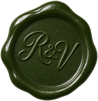
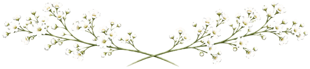
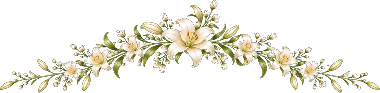
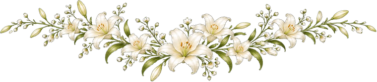

Rikke & Valdemar
inviterer dere til sitt bryllup

Lørdag 27. mai 2028
Hardingasete · Hardanger
for Sigmund og bestemor
Svar innen 4. januar 2028
Vi gleder oss til å feire med dere

Alt om helgen


Bilde av dere

Svar på invitasjonen
Barnefritt bryllup
Svar innen tirsdag 4. januar 2028 kl. 23:59
Svar på invitasjonen